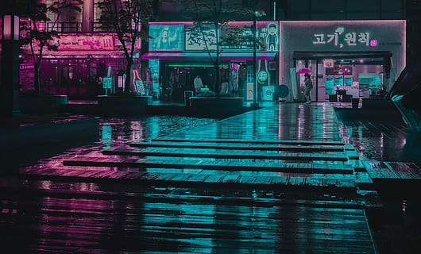
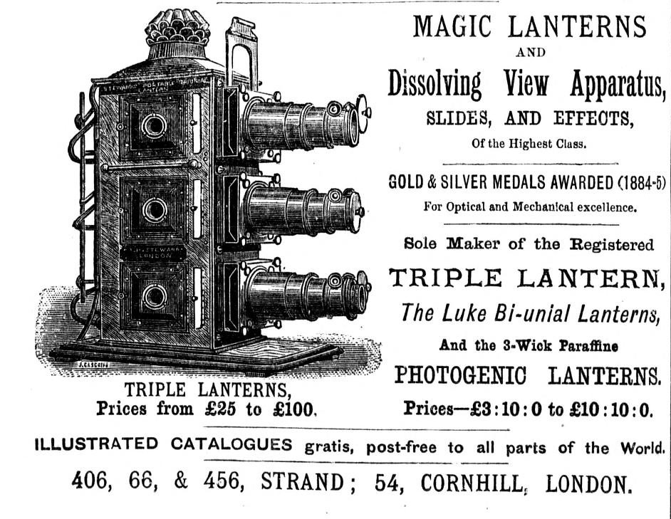
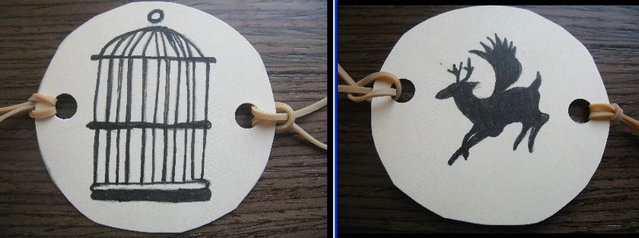
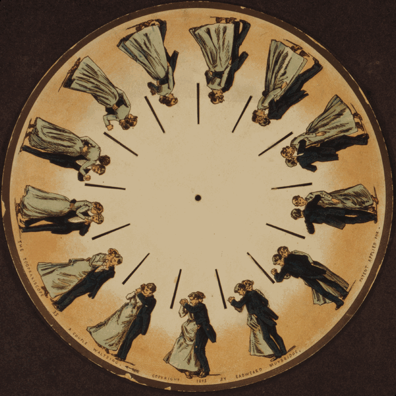
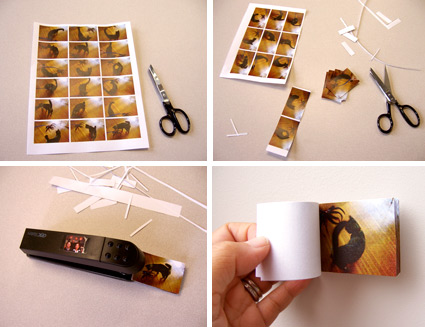
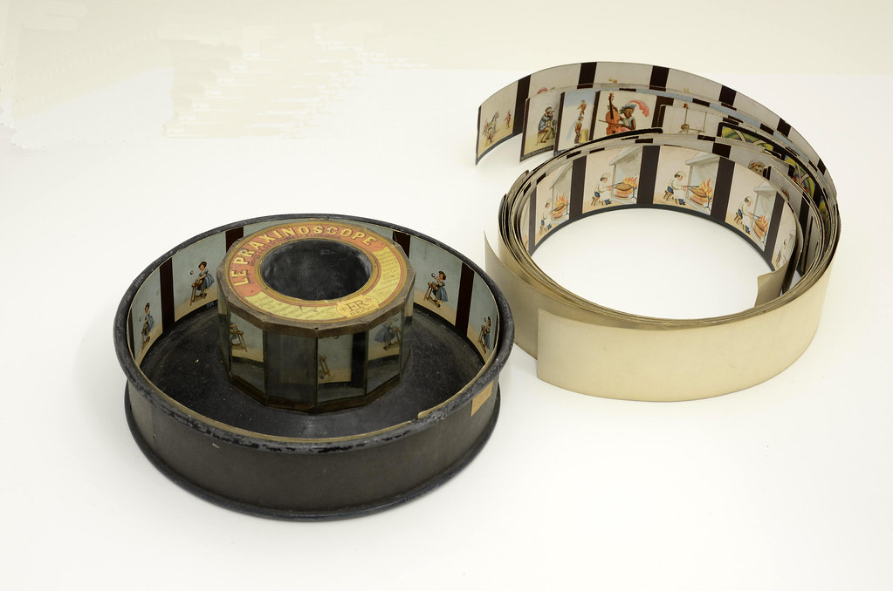
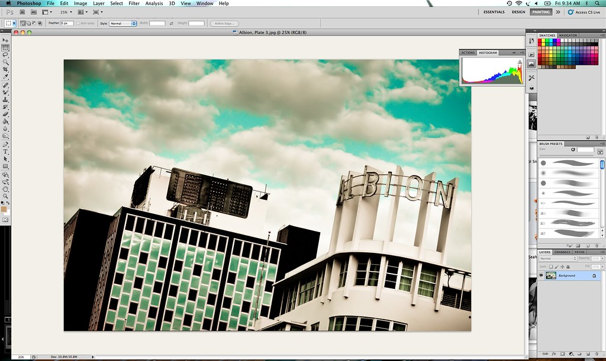
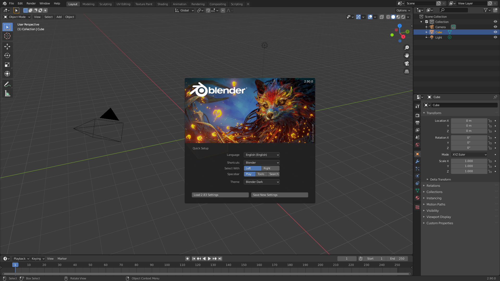
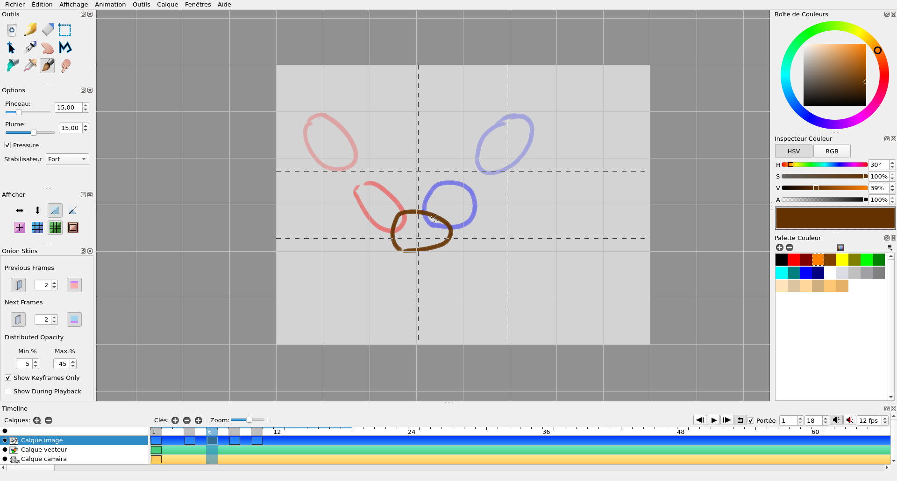
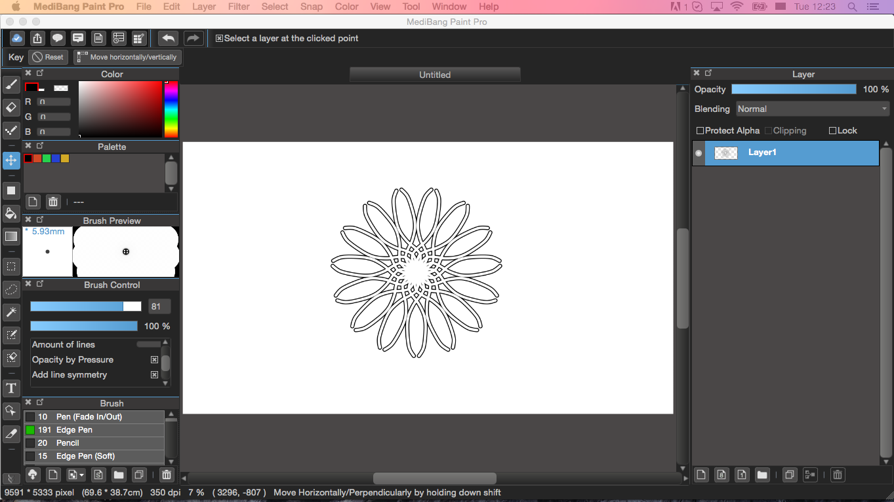

☰Timeline

Animation
Animation
Animation
Animation has improved and developed during the past to the future. Animations are different drawings that form amazing movies, videos, and games. There are different software and hardware that have improved animation that brings enjoyment and relaxation.
Hardware

Magic Lantern
- - Magic Lantern is a hardware device that was created in 1603.
- - This hardware device helps others see drawings that can be put into a movie.
- - Magic Lantern also helps others see different drawings move on a big screen.

Thaumatrope
- - Thaumatrope is a hardware device that was created in 1824.
- - This hardware device helps make drawings move through spinning a card or anything this is round to change the drawings as it spins.
- - Thaumatrope helps others see drawings move through spinning a card or anything that is round.

Phenakitoscope
- - Phenakitoscope is a hardware device that was created in 1831.
- - This hardware device help see cartoons move through drawing different things on a disk. As it spins, the cartoon will move through the mirror.
- - Phenakitoscope helps other see drawings move using a mirror and a disk.

Flip Book
- - Flip Book is a hardware device that was created in 1868.
- - This hardware device helps see different cartoons move through drawing different cartoons stories on each paper. As you flip the book, the cartoons move through the book.
- - Flip Book helps others see moving drawings through books.

Movieola/Praxinoscope
- - Movieola/Praxinoscope is a hardware device that was created in 1877.
- - This hardware device helps see drawings move by putting pictures around the wheel, so when it moves, the mirror in the middle can see the drawing move.
- - Movieola/Praxinoscope helps others see moving drawings through wheels and mirrors.
Software

Adobe After Effects
- - Adobe After Effects is a software device that was created in 1993.
- - This software device helps make 3D things moveable using different effects, backgrounds, shapes, and many more.
- - Adobe After Effects helps others make 3D things through different effects and tools.

Blender
- - Blender is a software device that was created in 1994.
- - This is a software device that helps create different things and drawings into 3D.
- - Blender helps others see and visualize different things created in 3D when making their own game, video , or animation.

Pencil 2D Animation
- - Pencil 2D Animation is a software device that was created in 2005.
- - It is a software device that helps create different drawings and animation using different tools.
- - Pencil 2D Animation helps others draw in a comfortable, enjoyable, and relaxing way.
Clip Studio Paint
- - Clip Studio Paint is a software device that was created in 2012.
- - It is a software device that is used for drawing different kinds of animation and design.
- - Clip Studio Paint helps design different drawings using different tools in the software.

Medibang Paint
- - Medibang Paint is a software device that was created in 2014.
- - It is a software deivce that is used for drawing animation and comics.
- - Medibang Paint helps others learn new things through different inspirations, competitions, and designs.
Future Inventions
My future invention is a app on the phone that projects the website for making animation on walls.
Benefits
- - It doesn’t harm your eyes
- - It is a free open space to draw it anywhere you want.
- - It can also help decorate your walls using the app.
Details
- - In the app, there are different tools that can be used when drawing animation.
- - You can draw with your hand or a special pen that can be drawn on the wall.
- - There is an off and on button at the bottom right corner. When you click the on and off button, it closes the app.
- - You can change the background color on the top right corner. It helps with finding a color that feels comfortable and calm for you when drawing animation.
- - In the app, there is a tutorial about how to use the app, how big the screen will be, and how to use the different buttons.
- - The app has a battery charger. It helps charge the battery of the screen by itself